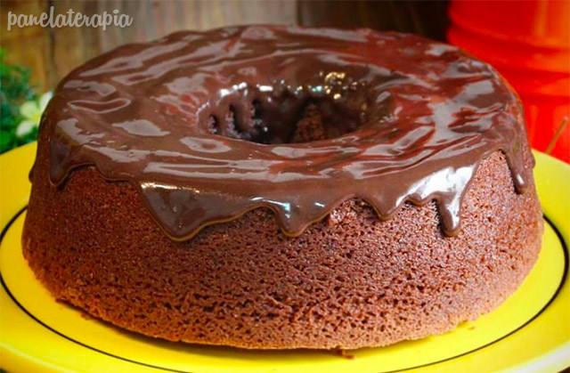
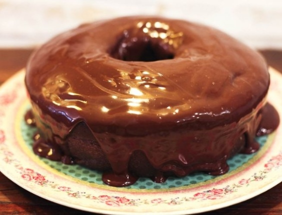

BOLO DE CHOCOLATE

INGREDIENTES:
- 1 xícara de chá de leite
- 1 xícara de chá de óleo de soja
- 2 unidades de ovo
- 2 xícaras de chá de farinha de trigo
- 1 xícara de chá de achocolatado em pó
- 1 xícara de chá de açúcar
- 1 colheres de sopa de fermento químico em pó
MODO DE PREPARO:
- Coloque os líquidos no liqüidificador e bata até misturar bem. Coloque os outros ingredientes, sendo o fermento o último. Leve para assar em forno médio, numa forma untada e enfarinhada.
